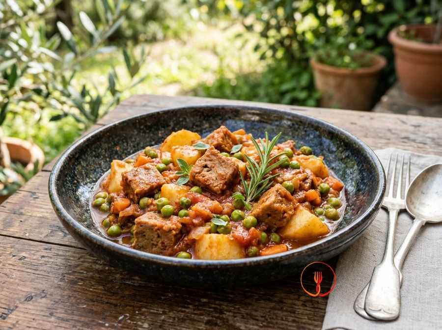

Spezzatino di seitan con patate e piselli
Spezzatino vegetale di seitan con patate e piselli in umido di pomodoro.
Ingredienti
- Seitan al naturale400 gr
- Patate400 gr
- Piselli surgelati200 gr
- Passata di pomodoro300 ml
- Cipolla80 gr
- Carota80 gr
- Olio extravergine d'oliva40 ml
- Rosmarino2 gr
- Acqua250 ml
- Sale fino5 gr
Allergeni
Glutine
Può contenere tracce di: Sedano, Soia.
Procedimento
- Inizia la preparazione mondando e tritando finemente 80 g di cipolla e 80 g di carota. Taglia poi i 400 g di seitan al naturale e i 400 g di patate in cubetti di circa 2-3 centimetri, cercando di mantenere dimensioni uniformi affinché cuociano nello stesso tempo.
- In una casseruola capiente, scalda 40 ml di olio extravergine d'oliva a fuoco medio-basso. Aggiungi il trito di cipolla e carota e lascia soffriggere per circa 5 minuti, finché le verdure non risulteranno tenere e la cipolla sarà diventata trasparente e aromatica.
- Alza leggermente la fiamma e unisci i 400 g di seitan a cubetti. Rosolalo uniformemente per 5 minuti, mescolando spesso, fino a quando non vedrai formarsi una leggera crosticina dorata in superficie che ne migliorerà la consistenza finale.
- Aggiungi i 400 g di patate e i 2 g di rosmarino nella pentola, lasciandoli insaporire con il seitan per un paio di minuti. Questo passaggio permette alle patate di assorbire i sapori del fondo di cottura prima dell'aggiunta dei liquidi.
- Versa nella casseruola 300 ml di passata di pomodoro, i 250 ml di acqua e aggiungi i 5 g di sale fino. Porta a bollore, poi abbassa la fiamma, copri con un coperchio e lascia cuocere dolcemente per 15 minuti, permettendo alle patate di ammorbidirsi senza sfaldarsi.
- Trascorso questo tempo, unisci i 200 g di piselli surgelati al resto degli ingredienti. Prosegui la cottura per altri 10 minuti senza coperchio se desideri un sugo più ristretto; i piselli dovranno risultare teneri e le patate dovranno lasciarsi infilzare facilmente con una forchetta.
- Una volta terminata la cottura, spegni il fuoco e lascia riposare lo spezzatino per qualche minuto prima di portarlo in tavola. Questo breve riposo è il segreto dello chef per far sì che i sapori si amalgamino perfettamente e la salsa raggiunga la densità ideale, avvolgendo ogni cubetto di seitan.
Valori nutrizionali (stima)
| Per porzione (325 g) | Per 100 g | |
|---|---|---|
| Energia | 1523 kJ / 364 kcal | 469 kJ / 112 kcal |
| Proteine | 30 g | 9.3 g |
| Carboidrati | 32 g | 9.9 g |
| di cui zuccheri | 5.8 g | 1.8 g |
| Grassi | 12 g | 3.6 g |
| di cui saturi | 1.6 g | 0.5 g |
| Fibre | 6.5 g | 2.0 g |
| Sale | 1.2 g | 0.4 g |
Valori stimati con l'AI su dati medi CREA / USDA: sono indicativi e non sostituiscono il parere di un medico o di un nutrizionista.
Apri la ricetta nell'app per la lista della spesa, le schede ingredienti e i negozi vicini.